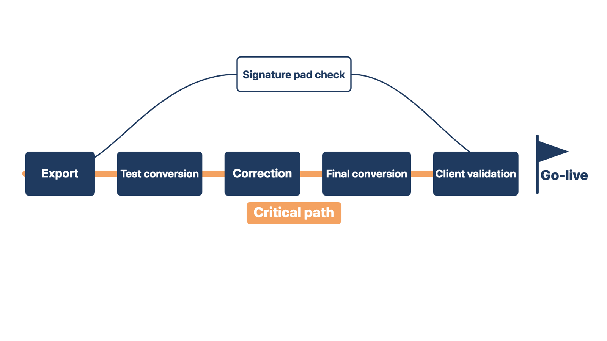
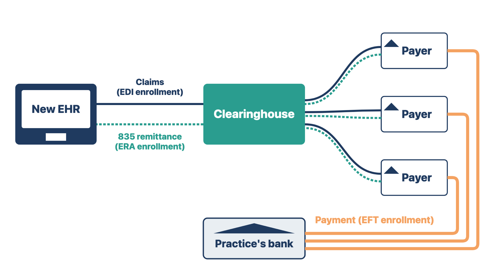
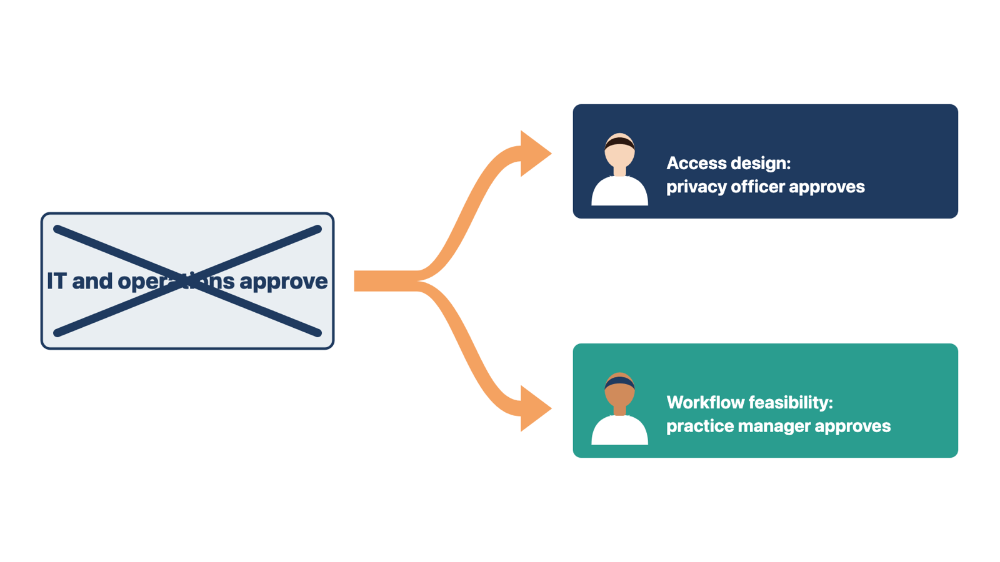

An unclear dependency is easy to ignore until it blocks other work. A clear one can be managed.
A dependency is more useful when it names the deliverable, provider, receiver, need date, and effect of delay. Compare:
Clearinghouse setup — pending.
with:
The client billing manager must sign the claim enrollment forms for the three largest payers by September 12. The clearinghouse submits them to each payer. Each payer must approve its enrollment before end-to-end claim testing on October 1. If late, claim testing and billing readiness move.
The second entry can be managed. It also shows that "clearinghouse setup" was hiding several separate pieces of work. The next section explains them.
The critical path is the chain of dependent work that sets the earliest possible finish date. You do not need special software to find it. Ask: "If this item slips, can go-live stay the same without cutting or squeezing required work?" If the answer is no, the item is on or near the critical path. Give it closer review.

High-risk projects also need backup paths. A clinic needs an approved downtime process for times the EHR is unavailable. A project may need a phased start if one location, interface, or data set cannot be ready safely. Backup plans need client approval. They are not permission to hide unfinished work.
Rule: Name each dependency's provider, receiver, need date, and effect of delay.
Example A. "Export pending" becomes "The source vendor delivers the test export to the conversion lead by October 3; if late, test conversion moves."
Example B. "Signature pads TBD" (to be determined) becomes "Device support confirms the model works by October 10; if late, front-desk testing moves."
Both entries say who owes what to whom, by when, and what slips if it is late.
Check yourself
"Clearinghouse setup complete" can sound like billing is ready. It is not. Most of the waiting happens with each health plan, one plan at a time.
When a project includes billing, "set up the clearinghouse" is several separate dependencies. A clearinghouse is a company that checks claims and passes them between the practice and many payers. A payer is the health plan or program that pays the claim, such as Medicare, Medicaid, or a commercial insurer. Plan each piece as its own item.
| Enrollment | What it does | Who usually signs or owns it | What it affects |
|---|---|---|---|
| Clearinghouse enrollment | Sets up the practice's account with the clearinghouse and connects it to the new system | Client billing lead, the vendor, and the clearinghouse | Whether claims can leave the system |
| Payer claims (EDI) enrollment | Tells each payer that this clearinghouse may send claims for this practice. EDI means electronic data interchange. | Client billing lead signs; the clearinghouse often submits | Whether that payer accepts claims from the new route |
| ERA enrollment | Sends each payer's electronic remittance advice (ERA), the X12 835 file that explains payments, to the new destination | Client billing lead | Whether payment details can post automatically |
| EFT enrollment | Sends payments by electronic funds transfer (EFT) to the practice's bank account | Client finance or billing lead | Where the money goes |
These are the same four enrollment steps that Module 9 tracks. One prerequisite sits underneath all four: payer provider enrollment (credentialing), which lets the practice and each clinician bill that payer at all. The client's credentialing or billing lead owns it. It is not one of the four enrollment steps, but if it is not complete, list it as its own dependency, because no claim to that payer can be paid without it.

What this means for planning:
Who owns what: the client's billing or finance lead owns the payer enrollments and signs them. The clearinghouse often prepares or submits them. The vendor's integration lead owns the connection to the clearinghouse. You own the roadmap entries: one dependency per enrollment per payer, each with an owner, need date, and the milestone it blocks. You do not decide which payers to enroll or how to fill in the forms. Module 9 covers the transactions and how to test them.
Rule: A test claim accepted by the clearinghouse proves the connection, not that any payer will accept, pay, or send remittance.
Example A. The clearinghouse accepts a test claim. Claim enrollment with the largest payer is not signed. Billing is not ready.
Example B. Claim enrollment is approved, but ERA still goes to the old clearinghouse. Claims will be paid, but payment details will not post to the new system.
In both, one piece is done and another still blocks billing. Each piece needs its own entry.
Check yourself
Shared approval often means nobody approves. Naming people before the team is busy keeps decisions from stalling later.
Use the Module 1 resource map to build a responsibility and decision table. Include at least:
Ask the client to name a provider champion, a respected clinician who supports the change with peers. Also ask for at least one super user per role and location. A super user is a staff member trained early who helps peers during training and at go-live. The clinic chooses these people. Record their protected hours, meaning time freed from normal work for the project.
Avoid shared accountability such as "IT and operations approve." (IT is information technology.) Name one accountable role and list the others as consulted. If two people truly must approve, record the separate question each one approves.

Rule: Name one accountable person for each decision; if two must approve, split the question.
Example A. The privacy officer approves which roles may open a restricted record. The practice manager confirms the front-desk workflow still works.
Example B. The clinical leader approves the clinical workflow. Billing confirms the approved code and charge path.
In both, one shared approval becomes two questions, each with one approver. You coordinate every review without becoming the approver.
Check yourself